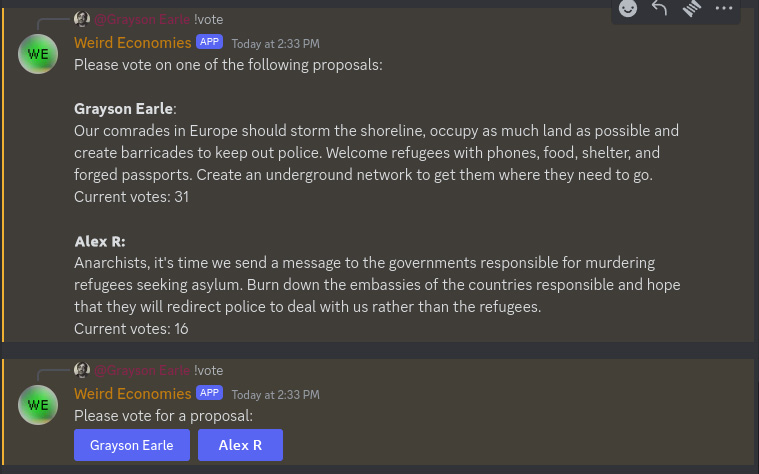
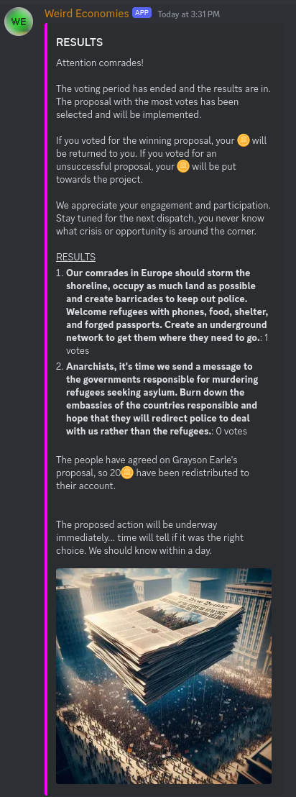
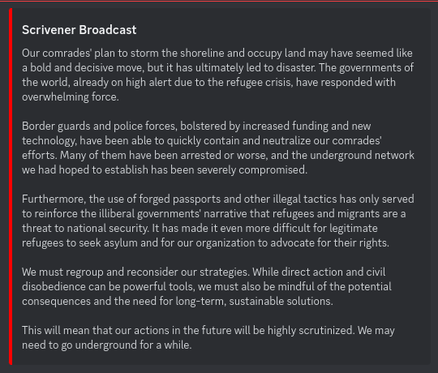

How to Play
The game takes place on the Discord server, in the #scrivener-game channel.
To begin, type !join

For a list of commands, type !howto

The game typically has two complete cycles per week. For example, each Sunday and Wednesday might have a Dispatch, which is either a crisis or an opportunity that you must respond to. This begins the Proposals phase, during which you can make proposals on how to respond. 24-48 hours later, the Voting phase begins, where you can vote on the proposals made by players. After another 24-48 hours, the votes are tallied and the winning proposal is announced. The outcome is integrated into the ongoing story, impacting future events.
Dispatches
Dispatches are the starting point for each cycle. They can be a crisis or an opportunity, requiring a response. For example:

Proposal Phase
The Proposal phase begins with an image like this:

During this phase, type !propose followed by your proposal. For example, to propose occupying the UN headquarters, you would type:
!propose Occupy the UN headquarters

To see all proposals, type !proposals. For inspiration, type !advice.

Voting Phase
The Voting phase begins with an image like this:

During this phase, type !vote to bring up the voting menu.
Voting lasts for 24 hours. After this, the winning proposal is selected and implemented in the game.
Results
After the voting, the results phase begins with an image like this:
The winning proposal is carried out, and the consequences are integrated into the game story. These changes will affect future events and decisions.
Next Cycle
The game then cycles again according to the schedule. Another crisis or opportunity will be announced in the next Dispatch. Have fun!